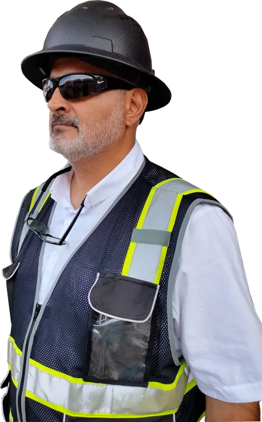
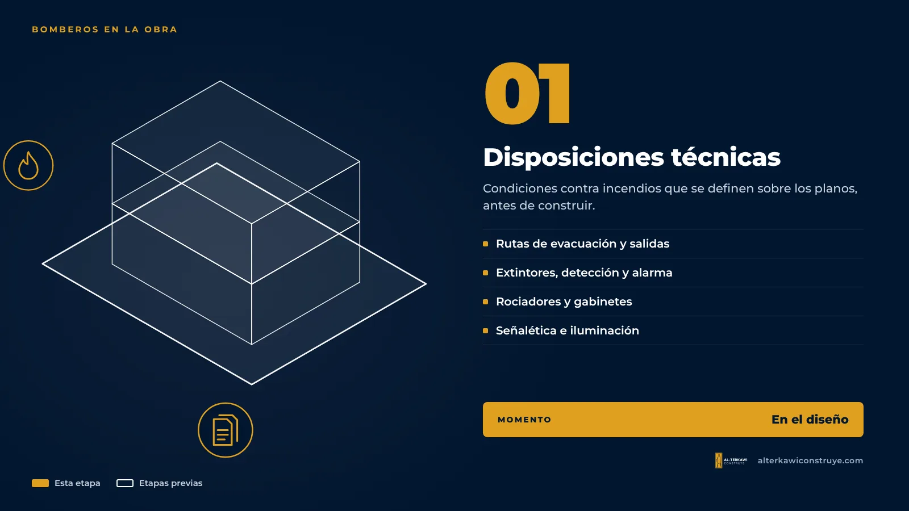
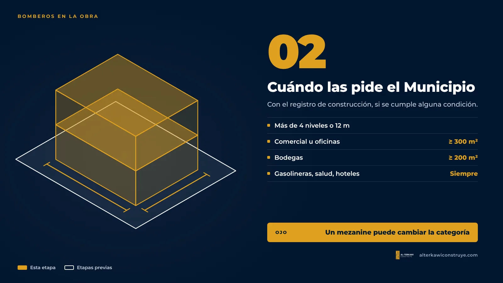
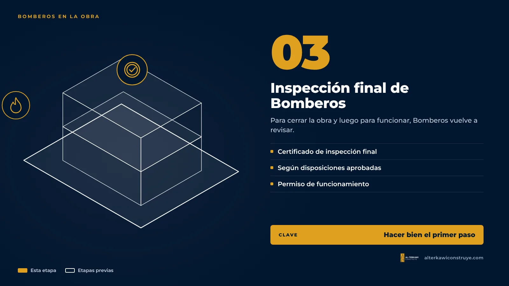

Disposiciones técnicas de Bomberos: cuándo las necesita su obra en Guayaquil

En proyectos de empresas, Bomberos aparece dos veces: al inicio, cuando el Municipio pide las disposiciones técnicas para aprobar el registro de construcción, y al final, cuando se necesita el certificado de inspección final del Benemérito Cuerpo de Bomberos de Guayaquil para cerrar la obra. Después, el local necesitará su permiso de funcionamiento de Bomberos para operar.
Qué son las disposiciones técnicas

Son las condiciones de prevención y protección contra incendios que el proyecto debe cumplir: salidas y rutas de evacuación, extintores, detección y alarma, rociadores, gabinetes, iluminación de emergencia, señalética y, en edificios mayores, sistemas de bombeo y reserva de agua contra incendios. Se definen sobre los planos, antes de construir, y luego se verifican en obra.
Cuándo las pide el Municipio

En el registro de construcción de Guayaquil se exigen cuando se cumple cualquiera de estas condiciones:
- Edificaciones de cualquier uso con más de 4 niveles o más de 12 metros de altura.
- Edificaciones con sótano (salvo viviendas unifamiliares y bifamiliares).
- Uso comercial desde 300 m² o con dos o más niveles.
- Oficinas desde 300 m².
- Industria o fábrica desde 300 m².
- Bodegas o almacenamiento desde 200 m².
- Uso mixto desde 300 m² o de más de un nivel.
- Lugares de concentración de público desde 300 m² (escuelas, auditorios, templos, cines, clubes, terminales, etc.).
- Vivienda exclusiva desde 500 m² y tres o más unidades.
- Siempre: gasolineras, establecimientos de salud y alojamiento (hoteles, hostales, pensiones).
Si su local está justo en el borde, por ejemplo 280 m² en un solo nivel, conviene revisarlo con cuidado: un mezanine o una ampliación posterior puede cambiar la categoría.
Por qué es el requisito que más sorprende
Porque cambia el diseño. Una ruta de evacuación más ancha, una segunda salida o un sistema de rociadores afectan la distribución, el cielo raso y el presupuesto de instalaciones. Si se descubre cuando la obra de interiorismo ya está contratada, el costo es mayor.
Al final de la obra

Para la inspección final municipal se pide el certificado de inspección final de Bomberos de acuerdo con las disposiciones técnicas aprobadas. Y para funcionar, el local necesita el certificado de Bomberos que pide la licencia de funcionamiento en actividades de mayor riesgo. Hacer bien el primer paso facilita los dos siguientes.
Siga leyendo
¿Te ayudamos con tu proyecto?
En AL-TERKAWI CONSTRUYE te acompañamos desde el plano hasta la entrega de la obra.

¿Su local supera los 300 m²?
Revisamos su proyecto antes de ingresarlo. Referencia: trámites de Bomberos desde $1.000 para unos 1.000 m².

Arquitecto en Guayaquil, Samborondón y Daule. Permisos municipales y obra para viviendas y empresas.